P 3-1
Task 1
Walk through the ray generation and primitive intersection parts of the rendering pipeline.
For Part 1, we utilized Casteljau algorithm which in essence, linearly interpolates with recursive subdivision. On
our passed in vector, t applies linear interpolation to all immediate neighbor pairs. Once the lerp is calculated for
these pairs we will return the new vector<\Vector2D> which will be the size of the previous vector minus one. We will
recurse and once again on the new vector and apply our previous methodology with the new points. This recursive
algorithm is continued until it hits the base case of the vector<\Vector2D> size is 1, indicating our control
point has been found.
Explain the triangle intersection algorithm you implemented in your own words.
For the triangle intersection, we set the ray equation to equal the plane equation, for this case the triangle
equation, and we set them to equal to each other to solve for the time of intersection between the 2. The ray
equation we used is o + td where o is the ray’s origin, d is the ray’s direction, and t is unknown. For the
triangle equation, we used (1 - b1 - b2)P0 + b1P1 + b2P2, where (1 - b1 - b2), b1, and b2 are the triangle’s
barycentric coordinates, and P0, P1, and P2 are the triangle’s vertices. Using the Möller Trumbore algorithm,
we’re able to solve for the unknowns: t, b1, and b2. If time of intersection was not in between the ray’s valid
time range (t < ray’s min_t or t > ray’s max_t) or if the barycentric coordinates are invalid (b1, b2 < 0 or b1,
b2 > 1 or b1 + b2 > 1), then there isn’t an intersection between the ray and triangle. Otherwise given t, we are
able to find the point of intersection between the ray and triangle using the ray equation.
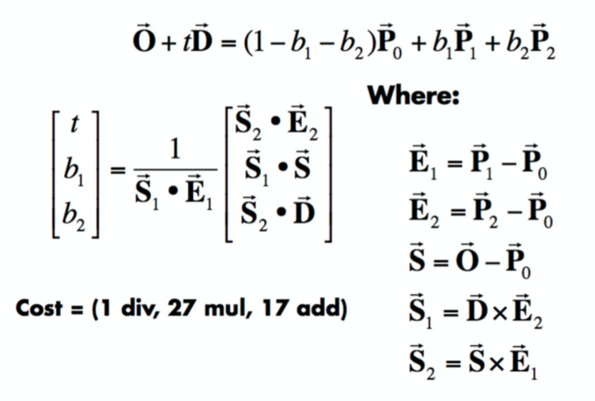


Task 2
Walk through your BVH construction algorithm. Explain the heuristic you chose for picking the splitting point.
For the BVH construction algorithm, we first computed the bounding box of a list of primitives and initialized a new BVHNode with that bounding box (starter code). We also set the start and end of the BVHNode using the given start and end primitive iterators. If the number of primitives in the bounding box was less than max_leaf_size, we just returned the node right away. Otherwise, it meant that the BVHNode was an interior node and not a leaf node so we had to split it. We first found the longest axis of the bounding box and also computed the average of the sum of all the primitives’ centroids in the box. We used the average centroid’s value on the longest axis as the splitting point. Using the partition method, we partitioned the primitives into 2 sets based on the splitting point. Finally, we recursively called construct_bvh on the set containing primitives less than the splitting point and stored that as the BVHNode’s right child and recursively called construct_bvh on the set containing primitives greater than the splitting point, storing that in the BVHNode’s left child.
Show images with normal shading for a few large .dae files that you can only render with BVH acceleration.
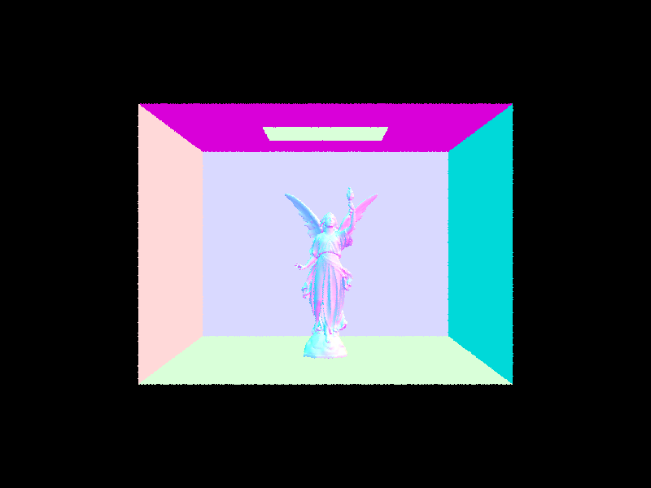
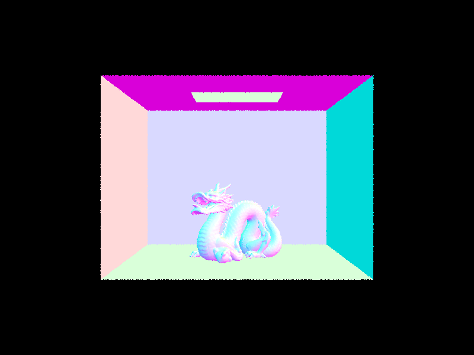
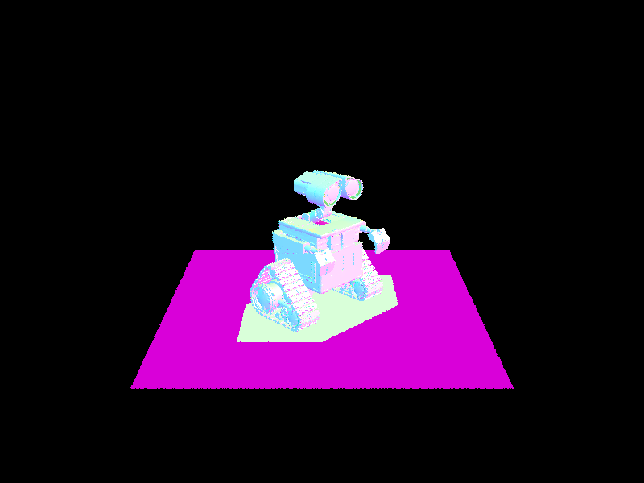
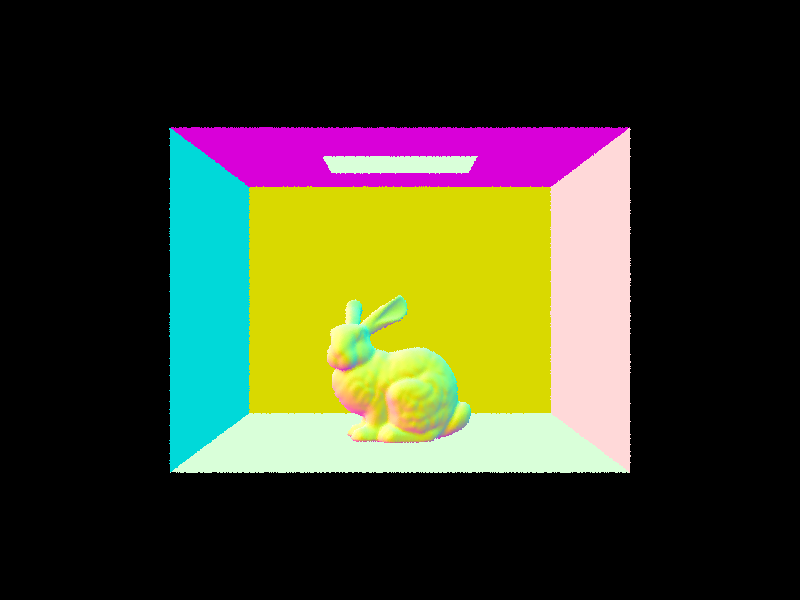
Compare rendering times on a few scenes with moderately complex geometries with and without BVH acceleration. Present your results in a one-paragraph analysis.
When rendering bunny_microfacet_cu, the rendering time with BVH acceleration had a significant speedup than without. Rendering the scene took 33696 primitives (0.0013 seconds without BVH acceleration and 0.0233 seconds with BVH acceleration) and both involved tracing around the same number of rays. However, with BVH acceleration ended up taking 0.1322 seconds to render while without BVH acceleration took 190.1359 seconds. When rendering the cow, there was also significant speedup with BVH acceleration than without. Rendering the scene took 5856 primitives (0.002 seconds without BVH acceleration and 0.0026 seconds with BVH acceleration) and both also involved tracing around the same number of rays. However, with BVH acceleration ended up taking 0.0026 seconds to render while without took 46.8458 seconds.
| bunny_microfacet_cu |
# of primitives |
time to build BVH (sec) |
# of traced rays |
speed (million rays/ sec) |
# of intersection tests / ray |
total render time (sec) |
| w/o BVH |
33696 |
0.0013 |
454830 |
0.0024 |
7266.1211 |
190.1359 |
| w/ BVH |
33696 |
0.0233 |
439156 |
3.3223 |
2.6990 |
0.0233 |
| cow |
# of primitives |
time to build BVH (sec) |
# of traced rays |
speed (million rays/ sec) |
# of intersection tests / ray |
total render time (sec) |
| w/o BVH |
5856 |
0.0002 |
476943 |
0.0102 |
2115.8678 |
46.8458 |
| w/ BVH |
5856 |
0.0026 |
459646 |
1.5057 |
10.3419 |
0.0026 |
bunny_microfacet_cu
without bvh
with bvh
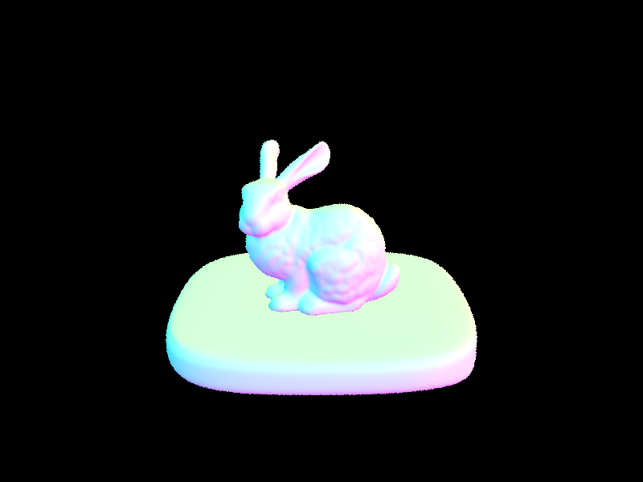
cow
without bvh
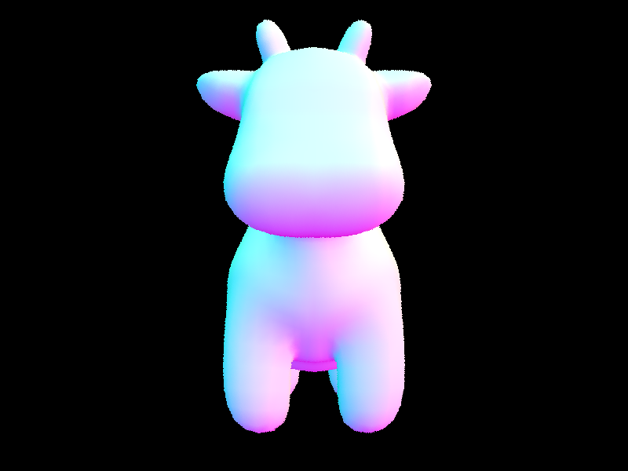
with bvh

Task 3
Walk through both implementations of the direct lighting function.
In direct lighting by sampling uniformly in a hemisphere, we first randomly sample a ray in the hemisphere. If the sampled ray has an intersection with an object, we calculate the radiance at that intersection point and add it to L_out. We repeat this num_samples times where num_samples = the number of light sources in the scene * ns_area_light and return the average L_out. In direct lighting by importance sampling, we iterate through all the light sources in the scene instead of sampling uniformly. Given a light source, we want to first sample the lightIf that light source is a point light source.
Show some images rendered with both implementations of the direct lighting function.
| uniform hemisphere |
important sampling |
| 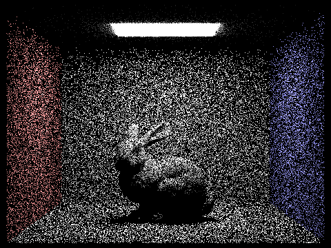 |
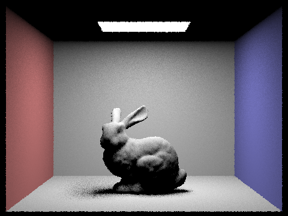 |
| 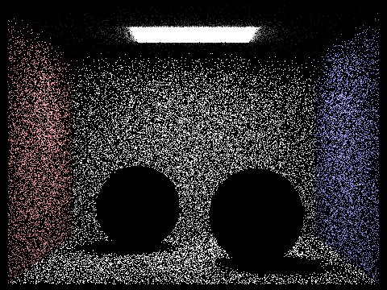 |
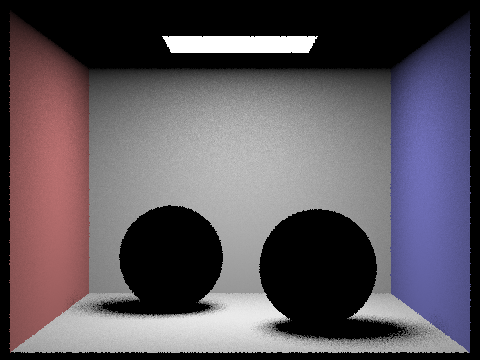 |
Compare the results between uniform hemisphere sampling and lighting sampling in a one-paragraph analysis.
| CBbunny |
1 light ray, 1 sample per pixel |
4 light ray, 1 sample per pixel |
16 light ray, 1 sample per pixel |
64 light ray, 1 sample per pixel |
| ' |
|
|
|
|
Task 4
For the indirect lighting function, we first sample a ray. We also calculate a random value equivalent to flipping a coin. If the sampled ray intersects with the scene and the random value is less than our continuous pdf, we calculate the light coming from the hit point, but continue to calculate the next radiance on the hitpoint from bouncing after the light ray. We account for the light bouncing by doing recursive calls until the ray doesn’t intersect the scene, we reach our max ray depth, or the random value is less than our continuous pdf.
Show some images rendered with global (direct and indirect) illumination. Use 1024 samples per pixel.
spheres_1024_global
./pathtracer -t 8 -s 1024 -l 16 -m 5 -r 480 360 -f spheres_1024.png ../dae/sky/CBspheres_lambertian.dae
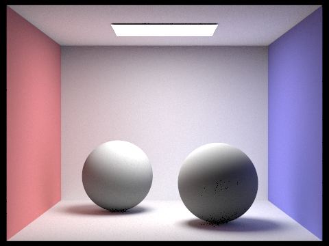
bench_1024_global
./pathtracer -t 8 -s 1024 -l 16 -m 5 -r 480 360 -f bench_1024.png ../../dae/sky/bench.dae
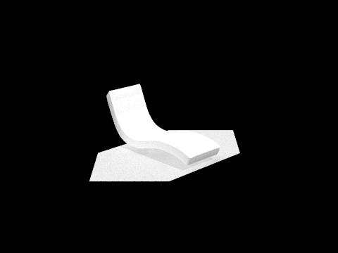
| direct |
indirect |
| bench_1024_direct |
bench_1024_indirect |
|
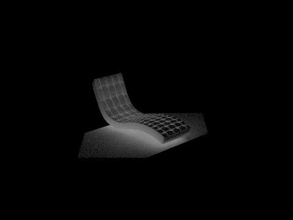 |
For CBbunny.dae, compare rendered views with max_ray_depth set to 0, 1, 2, 3, and 100 (the -m flag). Use 1024 samples per pixel.
| bunny_0_1024 |
bunny_1_1024 |
| 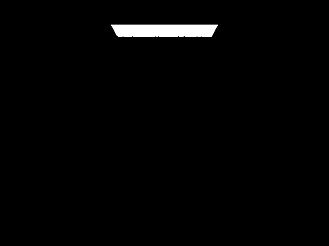 |
 |
| bunny_2_1024 |
bunny_3_1024 |
| 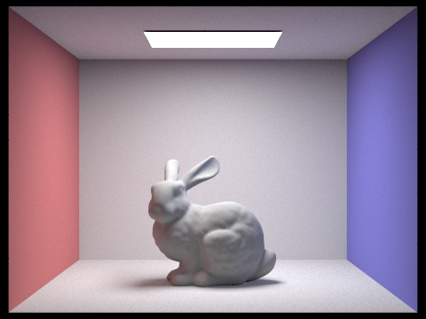 |
 |
| bunny_100_1024 |
| 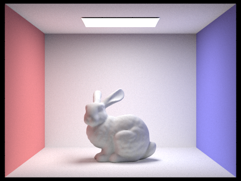 |
Pick one scene and compare rendered views with various sample-per-pixel rates, including at least 1, 2, 4, 8, 16, 64, and 1024. Use 4 light rays.
| 1 Pixel Sample |
2 Pixel Samples |
 |
 |
| 4 Pixel Sample |
8 Pixel Samples |
 |
 |
| 16 Pixel Sample |
64 Pixel Samples |
 |
 |
| 1024 Pixel Sample |
 |
Task 5
Walk through both implementations of the adaptive sampling.
In adaptive sampling we are generally following the normal raytrace pixel algorithm. However, we included a stopping point and kept track of distribution values for each pixel. Some pixels converge faster with low sampling rates (usually when it is in a flat area with few surrounding pixels and is bright), while other pixels need more samples to get rid of noise. We can use a general understanding of statistics to obtain 95% of the possible samples covered and stop sampling when it reaches its correct value. This is done using the standard deviation and mean of previous values to come up with the stopping point (95%). We only check this every 32 pixels since it is costly to calculate this every time.
render

 Blue pixels converge faster since there is a lower sampling rate (uniform relative to neighbors). While Red takes more time to converge since it has a higher sampling rate, this appears more on the sides of an object since they have a larger disparity in distance. This also appears in the divots and general areas where you would expect shadows on the object since they require more light bounce calculating to get correct.
We noticed our image is slightly off, this may be due to some incorrect sampling rate on light rays in previous parts.
Blue pixels converge faster since there is a lower sampling rate (uniform relative to neighbors). While Red takes more time to converge since it has a higher sampling rate, this appears more on the sides of an object since they have a larger disparity in distance. This also appears in the divots and general areas where you would expect shadows on the object since they require more light bounce calculating to get correct.
We noticed our image is slightly off, this may be due to some incorrect sampling rate on light rays in previous parts.
Collaboration
We worked together on pt 1 and pt 2 by pushing code when either of us figured out a bug. Due to family issues, Jessica completed part 3 and some of 4 alone. Kaiona did the entirety of 5 alone to make up for that.
As for the write up, Jessica did the majority with of the writing while Kaiona organized the html, did some writing parts and rendered photos.